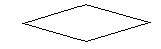

정보기기운용기능사 (2006-01-22 기출문제)
1과목: 전산 기초 이론
1. 전자 계산기 논리회로 중 항상 반대의 결과를 나타내는 회로는?
- AND 회로
- OR 회로
- NOT 회로
- FLIP - FLOP 회로
(정답률: 88%)

2. 원시 프로그램(Source Program)이란?
- 번역용 프로세서에 의해 생성된 것
- 기계가 이해할 수 있는 기계어로 된 것
- 사용자가 작성한 컴파일러 언어로 된 것
- 로더(Loader)에 의해 실행 가능한 것
(정답률: 57%)
3. 다음은 IC 메모리와 자기 코어 메모리를 서로 비교해 놓은 것이다. 이 중 틀린 것은?
- 일반적으로 IC 메모리가 자기 코어 메모리 보다 읽는 속도가 빠르다.
- 자기 코어 메모리는 전원이 끊겨 버리면 기억한 정보를 잃어 버린다.
- 자기 코어 메모리는 읽을 때 기억하고 있는 정보를 파괴하면서 읽는다.
- IC 메모리는 읽어낼 때 기억하고 있는 정보를 파괴하지 않는다.
(정답률: 45%)
4. 순서도 작성에 필요한 다음 기호는 무엇을 나타내는가?

- 처리기호
- 준비기호
- 판단기호
- 종료기호
(정답률: 83%)
5. 운영체제의 제어 프로그램에 속하지 않는 것은?
- 감시 프로그램
- 작업 관리 프로그램
- 서비스 프로그램
- 데이터 관리 프로그램
(정답률: 83%)
6. 연산결과가 양수(0) 또는 음수(1)인지, 자리올림(Carry), 넘침(Overflow)이 발생했는가를 표시하는 레지스터는?
- 누산기
- 가산기
- 데이터레지스터
- 상태레지스터
(정답률: 68%)
7. 10진수 21을 2진수로 변환하면 얼마인가?
- 10011
- 10100
- 10101
- 10110
(정답률: 80%)
8. 플라스틱 테이프의 표면에 자성 물질을 입한 것으로, 보관이 쉽고 순차적 처리에 적합한 기억장치는?
- 자기테이프 기억장치
- 자기드럼 기억장치
- 자기디스크 기억장치
- 자기박막 기억장치
(정답률: 76%)
9. 높은 집적도의 IC들이 컴퓨터의 부품으로 사용됨에 따라 시스템은 많은 장점들을 얻을 수 있다. 장점에 대한 설명 중 틀린 것은?
- 회로들이 더 근접하여 위치하게 됨으로써 전기적 통로의 길이가 줄어들어 동작속도가 크게 상승하게 되었다.
- 회로들간의 상호 연결이 칩 내부에서 이루어지기 때문에 부품들의 신뢰성이 높아졌다.
- 칩의 집적도가 높아짐에 따라 컴퓨터의 가격이 하락하게 되었다.
- 컴퓨터의 크기가 대폭 줄어들어 전력 소모가 없으며, 냉각 장치가 필요없다.
(정답률: 64%)
10. 전가산기(Full Adder)는 어떤 회로로 구성되는가?
- 반가산기 2개와 AND 게이트로 구성된다.
- 반가산기 2개와 OR 게이트로 구성된다.
- 반가산기 1개와 AND 게이트로 구성된다.
- 반가산기 1개와 OR 게이트로 구성된다.
(정답률: 85%)
2과목: 정보 기기 운용
11. 보조기억매체인 마그네틱 테이프에 대한 설명 중 잘못된 것은?
- 테이프밀도는 테이프 1인치에 저장될 수 있는 문자수로 표시된다.
- 테이프에 기록된 레코드는 블록간 간격(Inter Block Gap)에 의해 구분할 수 있다.
- 블록킹은 하나의 물리적 레코드를 구성하기 위해 2개이상의 논리레코드를 묶는 과정을 말한다.
- 테이프에 기록된 정보는 읽은 후에 정보가 파괴된다.
(정답률: 70%)
12. 다음 중 프린터와 관계 없는 단위는?
- LPM
- CPI
- IRG
- CPS
(정답률: 82%)
13. 바이러스의 예방이나 치료와 거리가 먼 것은?
- 원본 DOS용 시동 디스켓은 BACK UP을 하여 쓰기 방지를 하여야 한다.
- 새로운 프로그램은 실행시키기 전에 바이러스 백신 프로그램을 사용하여 점검한다.
- 바이러스 백신 프로그램을 사용하여 프로그램을 정기 테스트해 본다.
- 제공되는 프로그램이나 복제 프로그램을 정기적으로 사용한다.
(정답률: 81%)
14. 정보통신기기 사용 중 순간정전에 대비하여 설치해야 할 장치는?
- UPS
- AVR
- Adapter
- Power Supply
(정답률: 80%)
15. 20[Ω] 저항 중에 5(A)의 전류를 1분간 흘렸을 때의 발열량[cal]은 얼마인가?
- 7,200
- 21,600
- 1,440
- 7,500
(정답률: 65%)
16. 전류에 대한 설명으로 옳은 것은?
- 전류의 방향은 일정하며 전류의 크기가 변화하는 전류를 교류라 한다.
- 전류의 크기와 흐르는 방향이 일정한 전류를 교류라 한다.
- 전류의 방향과 크기가 시간에 따라 주기적으로 변하는 전류를 직류라 한다.
- 전위차가 있는 두 전하간을 도선으로 연결하면 전자가 이동하는데 이 전자의 이동을 전류라 한다.
(정답률: 57%)
17. 다음 중 1[J]과 같은 것은?
- 1[W·sec]
- 1[g·m]
- 1[N·m]
- 1[cal]
(정답률: 70%)
18. 인쇄되거나 손으로 쓴 문자에 빛을 쬐어 반사되는 양으로 정보를 입력하는 장치는?
- OCR
- Mouse
- LCD
- Digitizer
(정답률: 78%)
19. 비동기식의 다중화기로 실제 데이터가 있는 회선에만 동적으로 전송을 허용하여 전송효율을 높인 장치는 무엇인가?
- 지능 다중화기
- 주파수 다중화기
- 역 다중화기
- 광대역 다중화기
(정답률: 59%)
20. 교류 전압이 100[V]일 때 전력이 100[W]인 전열기에 흐르는 전류는?(단, 모든 크기는 실효값임)
- 1[A]
- 0.5[A]
- 10[A]
- 7.07[A]
(정답률: 79%)
21. OA(Office Automation)기기와 관계가 적은 것은?
- 컴퓨터(Computer)
- CAM(Computer Aided Manufacturing)
- 프린터(Printer)
- 팩시밀리(Facsimile)
(정답률: 70%)
22. 화상을 일정한 순서로 작게 세분하여 전기신호로 바꾸어 전송하고 그것을 다시 수신해서 원래 화면과 유사한 화상을 재현하는 통신 방식은?
- 케이블 TV 방식
- 팩시밀리 방식
- 레이저통신 방식
- 통화용 TV 방식
(정답률: 56%)
23. 여러종류의 네트워크와 정보통신 시스템을 상호 연결하는 접속장치가 아닌 것은?
- 허브(Hub)
- 라우터(Router)
- 리피터(Repeater)
- 프로토콜(Protocol)
(정답률: 76%)
24. 반복되는 작업을 쉽게 하기 위해 특정키에 일련의 작업을 기억시켜 필요시 연속으로 실행시키는 기능은?
- 머지
- 스풀
- 매크로
- 레이아웃
(정답률: 90%)
25. VDT작업 표준시간으로 권장되는 것 중 잘못된 것은?
- 1주일 5일 작업
- 1달 30일 작업
- 1일 4～5시간 작업
- 1시간에 50분 작업, 10분 휴식
(정답률: 88%)
26. CATV의 기본 구성이 아닌 것은?
- 서비스 분배 전송로
- 가입 단말장치
- 헤드 엔드
- 화상 응답기기
(정답률: 63%)
27. 플로피 디스크(Floppy Disk)의 특징이 아닌 것은?
- 반복사용 할 수 있어 비용이 절감된다.
- 운반 및 보관이 편리하다.
- 불규칙적인 자료처리가 가능하고 소음이 적다.
- 육안으로 데이터 식별이 가능하므로 입력 에러(Error)를 줄일 수 있다.
(정답률: 75%)
28. 전류는 3[A]이고, 전압은 90[V]가 가해져 있다면 저항은 얼마인가?
- 270 [Ω]
- 45 [Ω]
- 30 [Ω]
- 0.03 [Ω]
(정답률: 82%)
29. 컴퓨터 바이러스에 대한 설명으로 틀린 것은?
- 컴퓨터의 특수 부분에만 감염된다.
- 대부분 자연적으로 발생한다.
- 전염성이 있다.
- 바이러스 예방을 할 수 있다.
(정답률: 76%)
30. 바코드 판독 장치를 이용하여 판매, 재고관리 등에 사용하는 단말장치는?
- POS 단말기
- VAN 단말기
- LAN 단말기
- WAN 단말기
(정답률: 88%)
3과목: 정보 통신 일반
31. 통신신호의 전송품질의 중요한 척도가 되는 “S/N 비”를 바르게 설명한 것은?
- 원신호에 대한 잡음의 상대적인 크기 비율이다.
- 정상 전송속도에 대한 지연속도의 비율이다.
- 송신신호에 대한 수신신호의 세기 비율이다.
- 출력신호파형의 일그러짐율을 말한다.
(정답률: 60%)
32. 호(Call)의 설명으로 가장 적합한 것은?
- 이용자가 통화의 목적으로 통신회선을 점유하는 것을 말한다.
- 정보의 제공자가 제공한 정보의 최대량을 말한다.
- 정보의 이용자가 제공한 정보량 중 이용한 정보량을 말한다.
- 정보의 교환 담당자가 서비스한 통화 취급수를 말한다.
(정답률: 53%)
33. 다음 중 비동기식 전송의 특징과 거리가 먼 것은?
- 보통 스타트- 스톱 전송이라고 불리운다.
- 각글자는 앞쪽에 스타트 비트, 뒤쪽에 1개 혹은 2개의 스톱 비트를 갖는다.
- 주로 저속의 데이터 전송에 이용된다.
- 데이터 묶음의 앞쪽에 동기문자가 온다.
(정답률: 55%)
34. 다음 중 정보의 정의로서 가장 적합하지 않은 것은?
- 데이터에 의미를 부여하여 체계화한 것
- 데이터를 특정 목적에 유용토록 처리한 것
- 아직 평가가 내려지지 않은 기호의 계열
- 가치가 평가된 자료의 집합
(정답률: 80%)
35. 이동전화 시스템인 CDMA 방식의 의미는?
- 채널분할 다중화방식
- 코드분할 다중접속방식
- 캐리어 변복조방식
- 콤팩트 디스크 다중접속방식
(정답률: 79%)
36. 국제전기통신부호 제5호(ITU-T NO.5)로 채택하여 데이터 통신용 전송부호로 이용되고 있는 부호는?
- ASCII 부호
- EBCDIC 부호
- MORSE 부호
- TELEX 부호
(정답률: 63%)
37. 비동기식 전송의 특징이 아닌 것은?
- 직렬펄스로 전송된다.
- 스타트, 스톱비트가 필요하다.
- 보통 저속도에서 이용된다.
- 타이밍 신호가 Modem에서 공급된다.
(정답률: 52%)
38. 다음 중 동기(Synchronous) 방식의 빠른 속도에 가장 적절한 변조방식은?
- FSK
- ASK
- PSK
- AM
(정답률: 57%)
39. 다음 데이터의 변조방식 중 전송속도가 가장 빠른 경우에 이용되는 것은?
- 진폭편이변조
- 주파수편이변조
- 위상편이변조
- 진폭편이변조 + 위상편이변조
(정답률: 56%)
40. 데이터 교환기술에 대한 설명으로 틀린 것은?
- 실시간 대화식 통신에 메시지 교환방식은 적절하지 않다.
- 다량의 데이터를 지속적으로 통신할 때는 회선교환방식이 유리하다.
- 전자메일은 주로 메시지교환방식을 이용하지 않는다.
- 패킷교환방식은 속도변환, 프로토콜변환이 가능하다.
(정답률: 64%)
41. 데이터통신이 발달하게 된 이유로 가장 적합하지 않은 것은?
- 반도체 산업의 발달
- 정보의 보호 유지 필요성
- 통신제어장치의 개발
- 컴퓨터 처리기능 향상
(정답률: 53%)
42. 축적후 전달(Store And Forward)방식이라고 하며, 교환기가 호출자(송신측 컴퓨터)의 메시지를 받았다가 피호출자(수신측 컴퓨터)에게 보내주는 교환방식은?
- 메시지 교환방식
- 회선 교환방식
- 패킷 교환방식
- 데이터그램 교환방식
(정답률: 67%)
43. 통신회선과 컴퓨터 사이에 위치하여 다수의 통신회선으로부터 오는 데이터의 교통정리 역할을 하는 장치는?
- 컴퓨터
- 모뎀
- 통신제어장치
- 터미널장치
(정답률: 58%)
44. 홈네트워크용 무선 멀티미디어, 무선 LAN 등 근거리 이동 통신을 위한 표준화 방식으로 권고하고 있는 프로토콜은?
- ADSL
- CDMA
- IMARSAT
- Bluetooth
(정답률: 54%)
45. 데이터통신 시스템에서 데이터 전송계와 거리가 먼 것은?
- 중앙처리장치
- 통신제어장치
- 전송회선
- 신호변환장치
(정답률: 72%)
46. 다중화 통신방식에 대한 설명으로 가장 적합하지 않은 것은?
- 통신회선을 다중화하여 회선이용률을 향상시킨다.
- 비교적 높은 수준의 통신기술이 요구된다.
- 주파수분할 다중화기, 시분할 다중화기 등이 사용된다.
- 장거리 통신망에서는 회선 구성이 불리하다.
(정답률: 67%)
47. 일괄처리(Batch Processing) 방법에 속하지 않는 것은?
- 자료가 발생할 때마다 보조기억장치에 기억해 두었다가 필요시에 처리하는 방식
- 자료가 일정량 수집되면 처리하는 방식
- 자료를 일정기간 단위로 처리하는 방식
- 자료가 발생하는 즉시 필요한 처리를 하는 방식
(정답률: 72%)
48. 광케이블이 일반전화용 평형케이블과 비교한 이점이 아닌 것은?
- 전송용량이 커서 많은 신호를 전송할 수 있다.
- 케이블간의 누화는 무시될 수 있을 정도이다.
- 주파수에 따른 신호감쇄나 전송지연의 변화가 크다.
- 통신의 보안성이 우수하다.
(정답률: 59%)
49. PCM 통신방식의 변조과정과 관계가 없는 것은?
- 양자화
- 부호화
- 표본화
- 복호화
(정답률: 70%)
50. 데이터통신의 개념에 대하여 잘못 설명한 것은?
- 2진 부호로 표시된 정보를 목적물로 하는 통신
- 정보의 수집, 가공, 처리 및 분배 등의 기능을 수행하는 기계와 기계간의 통신
- 전화에 의한 음성 대화의 통신
- 정보기기 사이에 디지털 2진 형태로 표현된 정보를 송·수신하는 통신
(정답률: 64%)
4과목: 정보 통신 업무 규정
51. 컴퓨터 등 정보처리 능력을 가진 장치에 의하여 전자적 형태로 작성되어 송·수신 또는 저장되는 정보를 무엇이라고 하는가?
- 전자메일
- 전산정보
- 가상정보
- 전자문서
(정답률: 58%)
52. 다음 중 정보통신역무의 요금을 감면할 수 없는 경우는?
- 정보통신 역무사업을 위한 통신
- 전시에 군 작전상 필요한 통신
- 군사·치안기관의 전용회선 통신
- 인명·재산의 위험 및 구조에 관한 통신
(정답률: 72%)
53. 다음 중 단말기기를 가장 적합하게 정의한 것은?
- 통신회선에 접속하는 전신기, 전화기, 팩시밀리장치, 정보통신장치 등을 말한다.
- 통신회선에 접속하는 교환기, 변복조기, 중계기, 증폭기 등을 말한다.
- 공중통신설비와 접속하기 위하여 이용자가 설치하는 전건, 짹, 플럭, 버튼, 탄기반 등을 말한다.
- 정보통신에 이용하는 정보통신기기의 본체와 이에 부수되는 입·출력장치와 기타의 기기 등을 말한다.
(정답률: 47%)
54. 통신사업자가 통신역무 제공시 의무원칙에 관한 사항으로 볼 수 없는 것은?
- 정당한 사유없이 역무제공을 거부하여서는 아니된다.
- 업무처리시 공평, 신속, 정확을 기하여야 한다.
- 요금은 그 역무를 공평, 저렴하게 받을 수 있도록 결정되어야 한다.
- 역무의 제공시 국가의 보위 및 안보에 관한 통신보안규제를 홍보하도록 한다.
(정답률: 64%)
55. 정보통신설비와 이에 연결되는 다른 정보통신설비 또는 단말장치와의 사이에 정보의 상호전달을 위한 통신신호의 순서 및 절차 등을 무엇이라 하는가?
- 통신구조
- 통신규약
- 통신접속
- 통신구분
(정답률: 83%)
56. 전기통신사업자의 의무사항에 해당되지 않는 것은?
- 행정명령시 이용약관 변경 의무
- 전기통신사업자의 이용약관 사전신고(또는 인가)
- 전기통신사업자의 이용약관 비치 및 게시
- 가입자 구내에 설치한 전기통신설비의 선량한 관리 의무
(정답률: 51%)
57. 통신사업자의 교환설비로부터 이용자 전기통신설비의 최초단자에 이르기까지의 사이에 구성되는 회선은?
- 가입자선
- 국선
- 중계선
- 구내선
(정답률: 62%)
58. 정보화촉진법에서 정의하는 정보통신에 관한 설명으로 가장 적합한 것은?
- 자연인 또는 법인이 특정 목적을 위하여 광 또는 전식방식으로 처리하여 부호, 문자, 음성, 음향 및 영상 등으로 수신하는 수단을 말한다.
- 유선, 무선 및 기타의 전자적방시에 의하여 부호, 음향 또는 영상을 송신하거나 수신하는 것을 말한다.
- 전기통신설비와 컴퓨터를 연결하여 데이터를 송·수신하여 정보의 처리업무를 수행하는 것을 말한다.
- 정보의 수집, 가공, 저장, 검색, 송신, 수신 및 그 활용과 이에 관련된 기기, 기술, 역무 기타 정보화를 촉진하기 위한 일련의 활동과 수단을 말한다.
(정답률: 59%)
59. 별정통신사업을 경영하려면 어떻게 하여야 하는가?
- 대통령에게 신고한다.
- 정보통신부장관에게 허가를 신청한다.
- 정보통신부장관에게 등록한다.
- 정보통신부장관에게 신고한다.
(정답률: 58%)
60. 전기통신사업자의 법령상 구분(종류)이 아닌 것은?
- 기간통신사업자
- 부가통신사업자
- 별정통신사업자
- 자가통신사업자
(정답률: 77%)